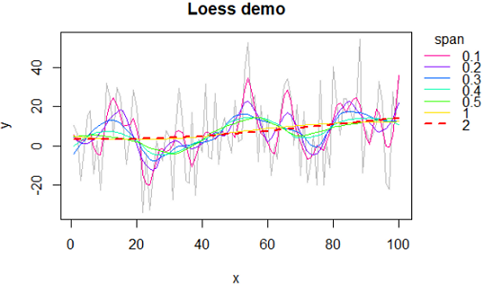

R统计 抽样、模拟与拟合
目录
要点: 为了探究真实数据的规律，我们需要抽样、模拟与拟合。[]
抽样
模拟
拟合
LOESS (locally estimated scatterplot smoothing) 平滑化
Local Polynomial Regression Fitting 局部加权回归散点平滑法(locally weighted scatterplot smoothing，LOWESS或LOESS)。
参数 span 越大，平滑化程度越大，也就是越失真。
个人感觉: span大于0.8就不可信了。点击查看应用demo
步骤: # 设置x坐标: x = seq(1, length(y) ); 如果已有x则跳过该步骤; # 建模型 model1=loess(y ~ x, span=span) # 预测新y值 y2=predict( model1 ) # 画图 plot(x,y2, lty='l')
#############
# LOESS 平滑化 核心函数
addLine=function(arr, span, color, ...){
model2=loess(arr ~ seq(1, length(arr)), span=span)
y2=predict( model2 )
lines(y2, type="l", col=color, ...)
}
# settings
colors=rev(rainbow(7, start=0, end=9/10)); length(colors);
#barplot(rep(1,length(colors)), col=colors)
# make data
set.seed(10)
arr=rnorm(100, 10, 20);arr
#draw
par(mar=c(4,4,3,6))
plot(arr, type="l", xlab="x", ylab="y", col='grey', main="Loess demo")
#add line: arr, span, color
spans=c((1:5)/10,1,2 ); length(spans)
line=c(rep(1,6), 2,2); length(line)
for(i in 1:length(spans)){
addLine(arr, spans[i], colors[i],lwd=line[i],lty=line[i])
}
#add legend
pos=par('usr');pos
legend(x=pos[2], y=pos[4], title="span",
xpd=T, #show outside figure
bty="n", #box type
col=colors, legend=spans, lty=line, lwd=line)
局部加权回归LOWESS 平滑化
图略。参数和loess一致时，图也基本一致。
f: the smoother span. This gives the proportion of points in the plot which influence the smooth at each value. Larger values give more smoothness.
y=mtcars$mpg # 造数据
set.seed(10) # 或则模拟一组
y=rnorm(40, 10, 20);y
#
n=length(y)
x=1:n
#
par(mar=c(4,4,3,6))
plot(x,y, type='o',col='grey',main="lowess demo")
#f 取不同的参数
lines(lowess(x,y, f = 0.2), col ='orange')
lines(lowess(x,y, f = 0.4), col ='blue')
lines(lowess(x,y, f = 0.6), col ='green')
lines(lowess(x,y, f = 0.8), col ='purple')
lines(lowess(x,y, f = 1), col ='cyan')
lines(lowess(x,y, f = 2), col ='red', lty=2, lwd=2)
#
pos=par('usr');pos
legend(x=pos[2], y=pos[4], title="f value", lty=1,
xpd=T, #show outside figure
bty="n", #box type
col=c('orange','blue','green','purple','cyan','red'),
legend=c(0.2,0.4,0.6,0.8,1,2))